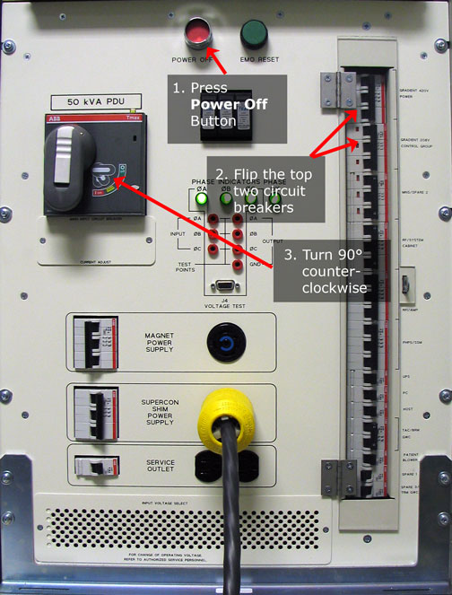
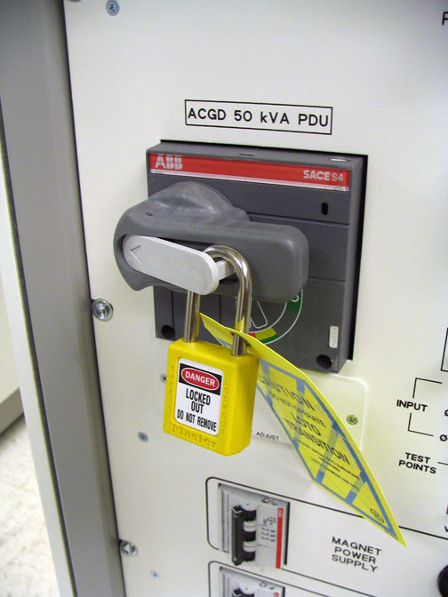
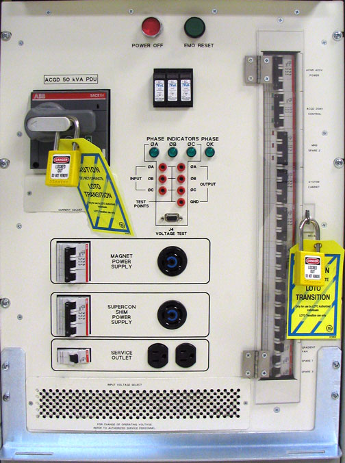

Operating Documentation
Direction 5500113, Rev# 3
Discovery MR750 3.0T Service Methods
Module Version 2.0, Version Date 6/18/09
Operating Documentation |
| Required Persons | Preliminary Reqs | Procedure | Finalization |
|---|---|---|---|
| 1 | Not Applicable | 10 mins | 10 mins |
Prior to performing maintenance work on the Global Operator Console or items in the Operator Workspace, the steps in this Lock Out / Tag Out (LOTO) Procedure must be performed by a LOTO Authorized GE Field Engineer. Completing all steps in this procedure will ensure a safe environment and avoid equipment damage when working on these parts.
Table 1:
| Name of Equipment | Number of Locks | Titles of Employees Authorized to perform LOTO | Titles of Affected Employees | How to Notify |
| 2 per GE FE | GE Field Engineers | Hospital Personnel | Verbal, Posted signs |
| NOTE: | The following table describes the type, location and magnitude of energy to be LOTO’d. |
| ENERGY SOURCE | YES | NO | LOCATION OF ENERGY ISOLATING MEANS | MAGNITUDE OF ENERGY |
| Electrical | x | PDU Circuit Breaker Panel | 208Vac, 420Vac | |
| Pneumatic | x | |||
| Hydraulic | x | |||
| Gas/Water/Steam | x | |||
| Chemical | x | |||
| Mechanical Motion | x | |||
| Gravity | x | |||
| Springs | x | |||
| Thermal | x | |||
| Stored Energy | x | Time discharge of internal capacitors | 208Vac, 420Vac | |
| Air Under Pressure | x | |||
| Oil Under Pressure | x | |||
| Water Under Pressure | x | |||
| Gas Under Pressure | x | |||
| Steam | x | |||
| Other | x |
| Last Updated | 07/19/2005 |
| Item | Qty | Effectivity | Part# | Manufacturer | |
|---|---|---|---|---|---|
| Personal Lock | 2 | - | 46-194427P320 | - | |
| Multi Locking Device (If More Service Person) | 1 | - | 46-194427P313 | - | |
| LOTO Tag | 1 | - | 46-194427P322 | - | |
| ||||
| ELECTROCUTION HAZARD. | ||||
| HIGH VOLTAGE PRESENT. | ||||
| USE PROPER LOCK OUT / TAG OUT PROCEDURES BEFORE REPLACING THE COMPONENTS. |
Time method for dissipation of stored energy – 5 minutes.
Three (3) personal locks and tags per Field Engineer (FE) at the site working on the de-energized equipment at the time of LOTO.
Prepare for shutdown of equipment. Notify affected personnel working in the area that LOTO is being performed.
Shutdown the VREs. From the Common Service Browser, go to the Utilities tab, and then the VRE folder. Then click Soft Power Off.
At the operator’s workspace, shutdown the workstation.
Wait for the system to indicate on the monitor that it is safe to power off the computer before proceeding. It usually takes about 90 seconds before this message is seen.
At the front panel of the PDU, press the Power Off button (see Step 1 of Illustration 1).
Illustration 1: Shut Down PDU Power and LOTO

At the front panel of the PDU, flip the circuit breaker switches for the following to the OFF position:
Gradient 420V
Gradient 208V
See Step 2 of Illustration 1.
Close and Lock Out/Tag Out the Gradient/PDU Service Disconnect Panel.
At the front panel of the PDU, rotate the large main breaker labeled INPUT counterclockwise to the green Green O (OFF) position (see Step 3 of Illustration 1).
At the front panel of the PDU, press on the left-pointing arrow on the end of the main breaker handle to expose the location where the Lock and Tag can be placed (see Illustration 2). Lock and Tag out the PDU INPUT circuit breaker.
Illustration 2: Locking the Main Circuit

Illustration 3: PDU cabinet with transition LOTO

Locate and turn off the main power supply feeding the Gradient/PDU cabinet (in this document we will refer to this as the Service Disconnect Panel. It may also be referred to as the Main Disconnect Panel (MDP) .)
Lock Out/Tag Out the main power supply.
Verify that all energy has been dissipated. Measure the power at the front panel 420 and 208 test points of the PDU.
| NOTE: | The test points are 100:1 ratio (208VAC = 2.08VAC. 420VAC = 4.20VAC). |
Prepare for re-energizing the equipment. Notify affected personnel working in the area that LOTO will be removed.
Remove personal LOTO device(s) from the Service Disconnect Panel.
Power On the main power supply feeding the Gradient/PDU cabinet.
Remove personal LOTO device(s) from the front panel of the PDU.
Rotate the larger main breaker labeled INPUT clockwise to RED I (ON) position.
At the front panel of the PDU, flip the circuit breaker switches for the following to the ON position:
Gradient 420V
Gradient 208V
Press the EMO Reset switch.
Bring the Signa software back up.
| NOTE: | The workstation will automatically power up the VRE subsystem once the Signa software starts. |
No finalization steps.